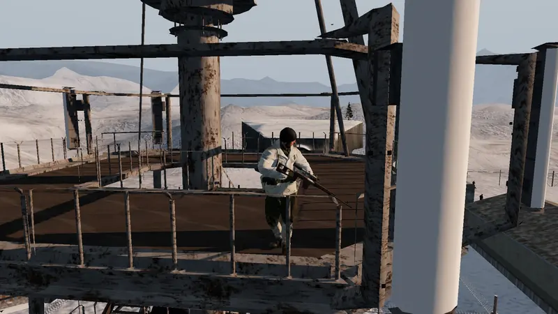
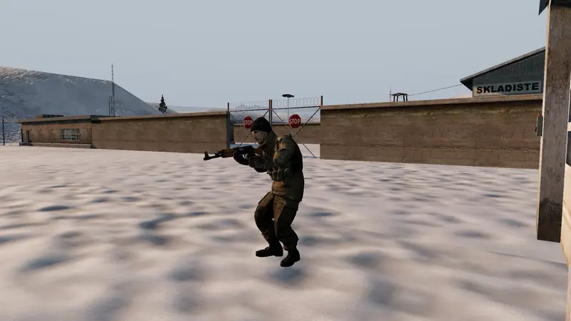
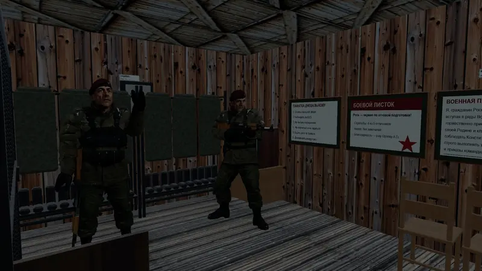
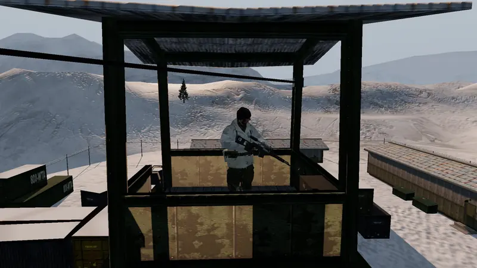
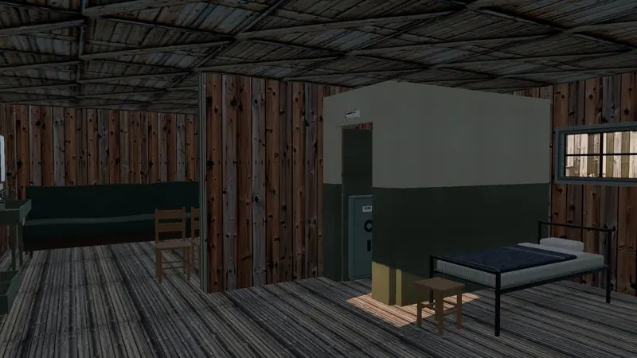
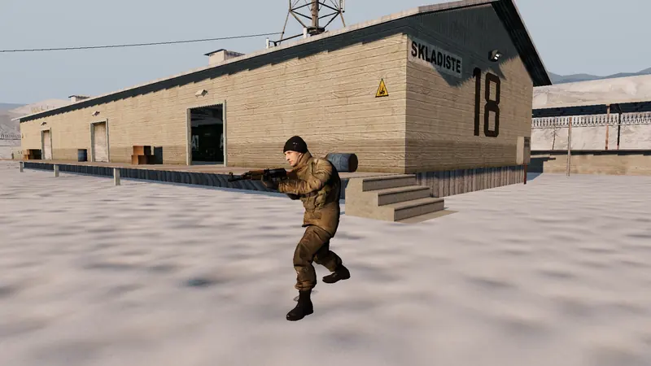
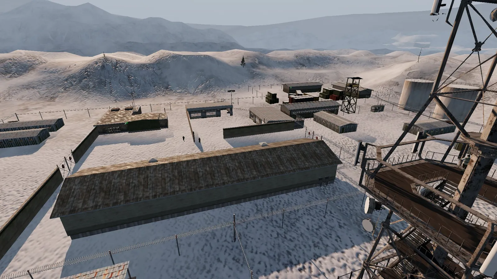

Миссия 01 · Совершенно секретно
Тихо зашёл. Тихо вышел.
SnowOps — одиночная миссия на заснеженной военной базе за Полярным кругом. Тебя сбрасывают с вертолёта на крышу поезда, дальше — сам: через забор, мимо вышек и патрулей — к грузовику у главного входа.
Здесь нет стрелки к цели и здоровья, которое восстанавливается за укрытием. Есть глаза охраны, которые надо обмануть, и тишина, которую легко нарушить одним выстрелом.
- ВысадкаС вертолёта на крышу идущего поезда.
- ПроникновениеЧерез забор, мимо вышек и патрулей.
- ЦельГрузовик у главного входа.
- СоветЧтобы никто не узнал, что ты здесь был.
- Миссия целиком: от прыжка с вертолёта до отъезда на грузовике
- Играется без интернета: в самолёте, в метро, на даче
- Без рекламы, покупок и таймеров на энергию

Разведданные · 6 донесений
Как думает охрана
-

Часовой не стреляет с первого взгляда. Сначала «?» — остановится, всмотрится, пойдёт проверить. В темноте, лёжа и без движения тебя узнают дольше. Успеешь уйти — пронесло.
-

Посты меняются, дневальный на своём месте, офицер обходит здания. Часовой сначала окликнет: «Стой, назад!» — и только потом откроет огонь. Всё по уставу караульной службы.
-

«Всем постам — доложить обстановку». Посты по очереди отвечают: «Без происшествий». Убрал часового — его вызовут ещё раз, потом: «Пост не отвечает. Проверить!» Найдут тело — тревога.
-

Выстрел в щиток на стене гасит всё здание, а свет в комнатах — обычные выключатели у дверей. В темноте тебя замечают позже. Но хлопок внутри услышат.
-
С радиовышки через базу тянется трос. Издалека охрана примет тебя за тень и только насторожится. Но если сирена уже воет — база охотится, и тень не спасёт.
-

Тебя не забывают через десять секунд. Ищут там, где видели в последний раз, заглядывают за угол и в комнаты. Под сиреной вся база по рации знает, где тебя заметили.
- Камеры и пультКамера поднимает тревогу за три секунды. На посту охраны — монитор с их картинкой.
- Снег помнитСледы на снегу, пар изо рта на морозе, снегопад над базой.
- ОружиеСВД с оптикой, MP5 с глушителем, гранаты. Выстрел с глушителем слышно намного ближе.
- Под телефонСенсорное управление под большие пальцы. Работает без интернета.
Пульт охраны · 8 каналов
Разведка
Всё снято в игре, без доработки.



Обновление · ALPHA.11 · 8 октября 2026
Что нового в сборке
- Трос — тихий путь: издалека охрана только настораживается.
- Интро: прыжок с рампы вертолёта на крышу поезда и рыбкой через ограду.
- В кабине — команды выпускающего, ревун и «Пошёл!».
- Снайперская винтовка СВД с оптическим прицелом.
- Охрана находит тела товарищей, раненые отходят, посты докладывают по рации.
- Журнал тревоги для тестеров: кто, откуда и почему тебя заметил.
Видеозапись. Трейлер ещё в монтаже — покажем, когда будет что показать.
Выбери снаряжение
Скачать демо
Ранняя версия: может падать и тормозить — за этим и нужны тестеры. Сборки — в последнем релизе на GitHub.
-
Слот 1
Android
- Формат
- APK, arm64
- Система
- Android 8.0 и новее
- Размер
- —
Разрешите установку из неизвестных источников и откройте APK.
-
Слот 2
Windows
- Формат
- установщик или zip, x86_64
- Система
- Windows 10 и новее
- Размер
- —
Установщик — обычная установка; архив — переносная версия без установки.
-
Слот 3
Linux
- Формат
- tar.gz, x86_64 и arm64
- Система
- современный дистрибутив
- Размер
- —
В архиве два бинарника, x86_64 и arm64, и общий файл данных.
-
Слот 4
macOS
- Формат
- zip, universal
- Система
- macOS 11 и новее
- Размер
- —
Правый клик по приложению → «Открыть»: сборка без нотаризации Apple.
В магазинах: позже Google Play · App Store · RuStore — после теста.
Поделиться: snowops.game/android.html — QR-код на последнюю сборку. Ошибки и вылеты — support@snowops.game или Issues.